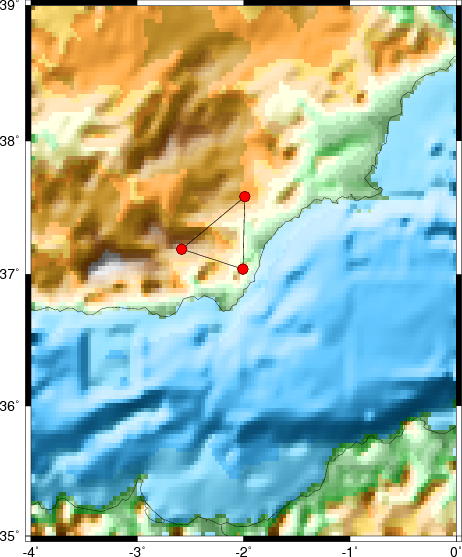
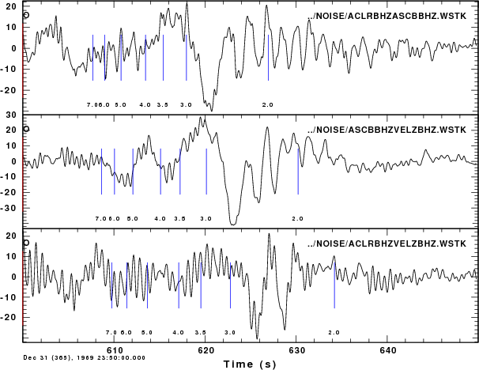
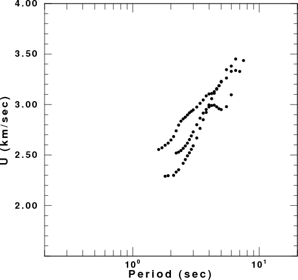
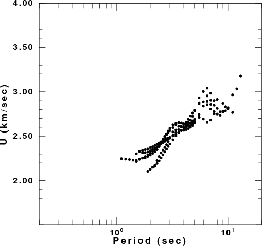

This note describes the initial results of applying the technique of cross-correlation of ground noise to obtain inter-station Green's functions between broadband stations run by IAG of the University of Granada. Software and data processing scripts will be presented.
Data Set
The evaluation data set consisted of 30 days of data from three broadband stations (ACLR, ASCB and VELZ). The station coordinates and a plot of locations are as follow:
|
Station |
Latitude |
Longitude |
|---|---|---|
|
ASCB |
37.0394 |
-2.0057 |
|
ACLR |
37.1897 |
-2.5822 |
|
VELZ |
37.5838 |
-1.9880 |

The inter-station distances are ACLR-ASCB 54 km, ACLR-VELZ 68 km, and ASCB-VELZ 60 km
The data were in SEISAN binary format. Since the sacsei did not work properly under LINUX, I used the seiasc pre-compiled for LINUX to create and ASCII SEISAN file, which was then converted to SAC binary using the attached program seiascsacbin ( g77 seiascsacbin.f -o seiascsacbin) [seiascsacbin.f]
Before discussing the preparation and processing, the directory organization in important:
/home/rbh/DATA/----
|
|----2005/--
| |-----305/
| ...
| |-----317/
| | |---ACLRBHE ACLRBHN ACLRBHZ ...
| ...
| |-----334/
|
|----WORK/
| |--DOIT seiasc* seiascsacbin* seiascsacbin.
|
|----TEMP/
|
|----NOISE/
| |-----DOCORRBH ACLRBHTVELZBHT.WSTK
|
|----RAW/
| |----ACLR/
| | |----2005-11-30-2329-42S.CLR___003
| |----ASCB/
| |----VELZ
|
|-----MFT/
RAW contains the SEISAN files from the the stations. These were organized by station into subdirectories, and the station day was split into 30 minute chunks
The first tack was to convert these into binary SAC day files. This is done by the shell SCRIPT DOIT. This script is annotated. Basically for each station, for each day, for each 30 minute segment, convert to SAC, reset the SAC header values, insert the station coordinates, insert the station component orientation, resample to 0.05 sec (the high frequencies will not be needed at these inter-station distances, and by making the trace files smaller, the size of the Fast Fourier Transforms used, is significantly reduced. Then save the trace day file in the directory organization required by the noise correlation script. Thus for station ACLR, Z component for November 1, 2005, the day trace ACLRBHZ is placed in the sub-directory 2005/305
This conversion to SAC took a lot of time. Mostly because I did this on my RAID, so that there was a lot of overhead.
This was run from the script in the NOISE directory. The processing script is called DOCORRBH. This script is also heavily commented. If you keep the naming convention used here, you only have to change the shell variables in the first 49 lines, and also the for STA1 in and case ${STA1} statements starting at line 356
This script will cross-correlate one-hour segments of the data set. As written, it will save a window of -600 to 600 seconds of the one-hour cross-correlation. Recall that the inter-station Green's function will be dominated by the surface-wave pulse, that we are interested in regional wave propagation. Thus this window should be wide enough to contain the Green's function out to distances of 1500 km station separation (assuming a 2.5 km/s propagation speed).
Next frequency limits are defined, here a passband of 0.02 - 5.0 Hz. The 0.02 Hz is probably the lowest frequency that could be resolved at regional distances. The 5.0 Hz reflects that fact that the Nyquist frequency is 10 Hz for a sampling interval of 0.05 s.
A high pass corner at 100 sec, is used for stability
The variable BASE states the location of the parent directory containing the data, e.g., the FLOR above. The TEMP is created by the script, and all temporary processing is done there. The final results are then copied to the directory from which the DOCORRBH was run.
Greens functions and group velocities
The following gsac commands were run from within the DOC directory to plot the results
GSAC - Computer Programs in Seismology [V1.1 10 JAN 2005]
Copyright 2004, 2005, 2006 R. B. Herrmann
GSAC> r ../NOISE/*Z.WSTK
../NOISE/ACLRBHZASCBBHZ.WSTK ../NOISE/ACLRBHZVELZBHZ.WSTK ../NOISE/ASCBBHZVELZBHZ.WSTK
GSAC> sort dist
Sorting on DIST in ascending order
GSAC> rtr
GSAC> bp c 0.05 2 n 2 p 2
BP: corners fl 0.050000 fh 2.000000 npoles 2 pass 2 Butterworth
GSAC> xlim o o 50
GSAC> markt on
GSAC> fileid name
GSAC> p
The result is

Group velocity analysis was performed using do_mft -G ../NOISE/*.WSTK. Group velocity analysis is tricky. We must be very careful in the choice the the filter ALPHA parameter (here I use 12.5 for these short distances. We must also know what to select. This is not easy because there is noise in the Green's functions. In a Korea study, we found that we could only believe the 1 - 3 second periods at a distance of 20 km, but that at larger distances we could believe the dispersion from 1 - 20 seconds. This resolution test can be done by using synthetics for surface motions due to a point force acting at the surface for a reasonable model for the region.
I found good dispersion for all paths. Examples of the MFT graphs are
The following table presents the Love and Rayleigh group velocity dispersion from these files.
|
 Love wave group velocities |
 Rayleigh wave group velocities |
The surf96 combined dispersion file is surf.disp Cross-correlation of ground noise will work for southern Spain. The cross-correlations may improve if we add another 30 days of data to the processing
The following are the SAC binary files of the stacked waveforms. The SAC header value IHDR11 shows the number of traces that were stacked to create this result. Note that since we stack the day cross-correlation and the reversed day cross-correlation, the number of days actually stacked in IHDR11/2
Since these are in INTEL, format, the safest thing to do before looking at them is to use the saccvt routine of Computer Programs in Seismology 3.30 in a shell script as follows
for i in *.WSTK
do
saccvt -I < $i > tmp
mv tmp $i
doneYou can safely use these SAC files on your computer.
The files are
ACLRBHRASCBBHR.WSTK
ACLRBHRVELZBHR.WSTK
ACLRBHTASCBBHT.WSTK
ACLRBHTVELZBHT.WSTK
ACLRBHZASCBBHZ.WSTK
ACLRBHZVELZBHZ.WSTK
ASCBBHRVELZBHR.WSTK
ASCBBHTVELZBHT.WSTK
ASCBBHZVELZBHZ.WSTK
{kind=link}
{kind=link}
{kind=link}
{kind=link}
{kind=link}
{kind=link}
{kind=link}
{kind=link}
{kind=link}